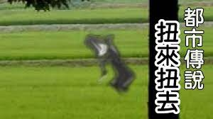

扭來扭去

描述
據聞扭來扭去是於田野或河邊扭來扭去的黑色或白色生物，任何見到並了解那是什麽的人都會發瘋。網際網路上的原版怪談如下：投稿者表示，自己的弟弟有個朋友叫「A君」。A君在田舍跟哥哥玩耍時，突然見到身穿白色衣服的人在窗外扭來扭去。其動作不像常人能做到。A君和哥哥最初對此感到困惑，但「哥哥卻於最終搞明白了」。即使如此，他的哥哥卻不肯對A君說明那是什麽。投稿者最後向他弟弟提議：「再問一下[A君的]哥哥不就好了？」他的弟弟卻回答道：「他已成了智慧型障礙者」。
2channel的使用者之後把這則故事改編：哥哥在用望遠鏡看到扭來扭去後，變得十分驚恐，望遠鏡也握不起來，就這樣跌在地上。哥哥之後同樣不肯對弟弟說明那是什麽，接著快步走回家。當弟弟想用望遠鏡觀察扭來扭去時，卻被急忙趕到的祖父阻止。他們回家後見到一邊狂笑一邊扭來扭去的哥哥，全家人則因為這件悲劇而傷感不已。祖母此時說道：「把哥哥放在這邊會比較方便。你們那邊地方又窄小，而且也受不了世人的目光吧……不如把他放在這邊，幾年後我們會把他放到田裏……」。弟弟聞畢落淚